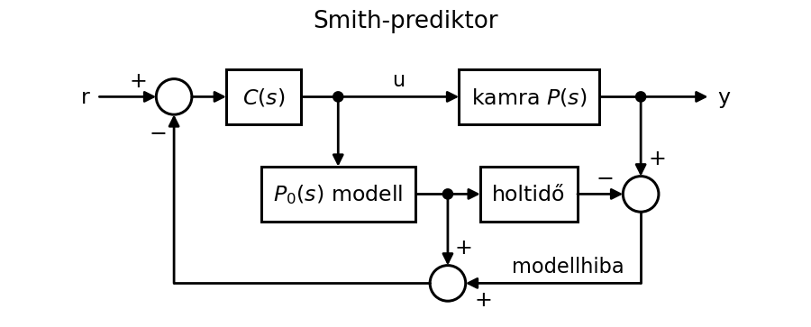
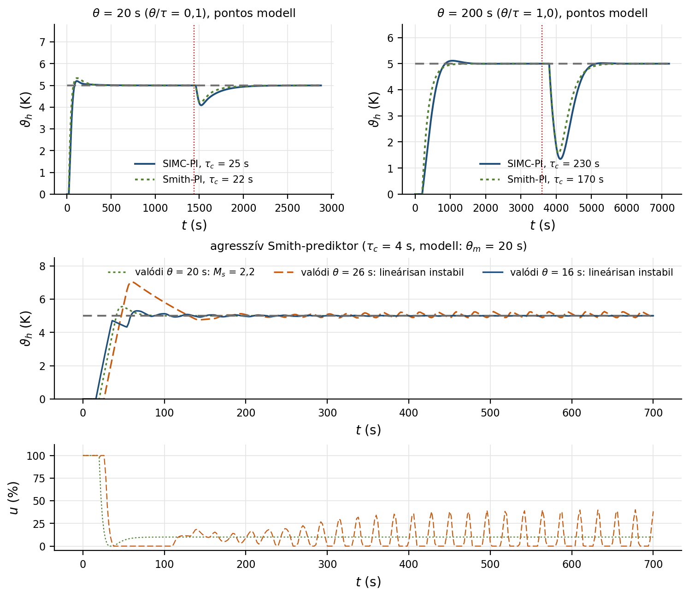

Egy laborba új hőkamra érkezik. A dokumentáció annyit mond: „0–100%-os fűtés, hűtés nincs”. Neked kell olyan szabályozót adnod, amely hideg indulás után gyorsan és túllövés nélkül beáll, alacsonyabb alapjelre is visszaáll, elviseli, ha a terhelés megváltozik – és fél év múlva is stabil lesz, amikor a kamrába más tömegű minta kerül. Modell nincs, csak a kamra és egy hőmérséklet-érzékelő.
Ez az ipari szabályozástechnika leggyakoribb helyzete. A munkafolyamat: kísérlet → modell → validálás → hangolás → robusztussági ellenőrzés → megvalósítás → kiértékelés → jegyzőkönyv. Útközben eldöntjük, megéri-e a holtidőre külön szerkezetet, a Smith-prediktort (Smith predictor) építeni.
Biztonsági figyelmeztetés: valódi fűtött berendezésnél a szabályozótól független túlmelegedés-védelem (hőbiztosíték, külön hőkapcsoló) és felügyelet kötelező.
A mennyiségek a környezethez képesti eltérések (K), a fűtés %.
| Jellemző | Követelmény |
|---|---|
| hideg indulás 0 → 20 K | túllövés legfeljebb 1 K |
| alapjel 20 → 14 K (1200 s-nál) | a hűlés alullövése legfeljebb 1 K |
| −10 % fűtési zavar (2400 s-nál) | a hőmérséklet esése legfeljebb 1,5 K, maradó hiba nélkül |
| robusztusság | a teljes bizonytalansági családon |
| megvalósítás | digitális, s, antiwindup |
A specifikáció szándékosan mérhető: minden sorhoz tartozik egy forgatókönyv és egy mutató, így a végén nem vitatkozni kell, hanem összevetni. A robusztussági sor a legfontosabb és a leggyakrabban elfelejtett: a hangolás nem a mai kamrára, hanem a jövő évire is szól. A túllövés korlátja azért szigorú, mert sok hőkezelési feladatnál a túlmelegedés a mintát károsítja, a lassabb beállás viszont csak időt veszt.
A „valódi” kamra szerepét a controlkit.projects_b
szimulátora játssza (didaktikai, kitalált értékek). Szándékosan eltér az
egyszerű modelltől: a melegítés időállandója 200 s, a hűlésé 260
s (fűtés–hűtés aszimmetria: hűteni csak a környezet tud), a
holtidő 20 s, az érzékelőnek 8 s-os saját késése és 0,2 K szórású zaja
van (a mag rögzített). Ezeket a számokat a tervező nem ismeri.
Két kísérletet tervezünk:
Miért éppen ezek? A kísérlettervezés (experiment design) kérdései és válaszaink:
Az ugrásból elsőrendű holtidős (FOPDT) modellt illesztünk legkisebb négyzetekkel (Ugrásválasz-alapú modellillesztés), a PRBS-ből kimeneti hibás (output-error, OE) diszkrét modellt, a becsült elmozdulással (offset). Az OE-szerkezet azért jobb itt, mint az egyszerű ARX, mert a zaj a kimenethez adódik, nem a folyamat egyenletébe; ilyen adaton az ARX-becslés torzít (Legkisebb négyzetek, ARX-modell és gerjesztés).
Mielőtt a számokat megnézed, tippeld meg: ugyanazt az időállandót adja-e a melegítés és a hűlés? Nem: az ugrásból K/%, s, s adódik, a hűlésből s. A becsült holtidő a valódi 20 s helyett kb. 28 s: a 8 s-os érzékelőkésés „holtidőnek látszik” – ez a feleződési szabály logikája (Modellillesztés és IMC/SIMC-hangolás): a kis időállandók a holtidőhöz adódnak.
A paraméterek statisztikai szórása apró (-ra kb. 1,1 s), a két irány közötti eltérés viszont 60 s. A szórás csak a zajt méri, a modellszerkezet hibáját nem. Ezért a validálás döntő (Validálás és zárt hurkú identifikáció): minden modellt minden adaton szimulálunk, és az illeszkedést a normált négyzetes hibával (NRMSE, 100% a tökéletes) mérjük.
| modell adat (illeszkedés, %) | ugrás | hűlés | PRBS | független PRBS |
|---|---|---|---|---|
| FOPDT az ugrásból | 96,1 | 80,2 | 79,2 | 80,4 |
| OE a PRBS-ből | 73,9 | 86,1 | 85,2 | 87,2 |
| FOPDT a hűlésből | 79,4 | 96,2 | 83,3 | 86,4 |
Egyik lineáris modell sem jó mindenhol; a PRBS-modell „átlagos” (, s, s), és még a független adaton sem fehérek a maradékai. Szimmetrikus kamrán ugyanez a PRBS-illesztés 92% lenne. A maradék (residual) a mért és a modellből számolt kimenet különbsége; ha benne még szabályosság van (autokorrelált, vagy korrelál a bemenettel), a modellből hiányzik valami – itt a két irány eltérő dinamikája. A tanulság: az identifikált modell a bizonytalanságával együtt a modell. Hangolásra az ugrásból kapott modellt használjuk, a többit a bizonytalansági családban fedjük le: ±10%, 0,9–1,35-szörös, 22–38 s (27 tag).
A SIMC-szabály (Modellillesztés és IMC/SIMC-hangolás; a konstansok az ott jelzett forrásellenőrzéssel értendők) -val:
Szavakban: a SIMC a folyamat időállandóját és holtidejét közvetlenül paraméterré alakítja; a az egyetlen „csavar”, amely a gyorsaság és a robusztusság között dönt.
Összevetésül relés kísérletet is végzünk (Ziegler–Nichols-módszerek és a relés önhangolás) a virtuális kamrán: %, 0,4 K hiszterézis. Eredmény: K, s, , ZN-PI: , s. A névleges FOPDT hőkamrán (Fázissík, egyensúlyi pontok és határciklus) K, s adódott; itt az érzékelőkésés, az aszimmetria és a hiszterézis hosszabb periódust ad.
A holtidő a fő korlát: a szabályozó csak késéssel látja, mit tett. O. J. M. Smith ötlete (1957, [S-SMITH57]): futtassunk egy modellt a szabályozóval párhuzamosan, és a PI a holtidő nélküli modellkimenetet lássa, a mért jelből pedig csak a modell hibáját kapja.

Legyen a kamra , a modell pontos. Ekkor a modellhiba-ág nulla, a PI a -t látja:
Szavakban: a karakterisztikus egyenletből kiesett a holtidő, a válasz a holtidő nélküli zárt kör válasza, csak -val eltolva. A PI-t ezért -val hangoljuk: , .
Mielőtt tovább olvasol, gondold végig: ha a modell pontos, mit lát a PI a zárt körben abban a pillanatban, amikor megváltozik? A modell holtidő nélküli ága azonnal reagál, a mért jel viszont csak múlva – de addigra a holtidős modellág pontosan ugyanazt jósolja, és a kettő kiejti egymást. A PI tehát úgy dolgozik, mintha nem lenne holtidő.
Két korlát marad. (1) A zavart a holtidő letelte előtt semmi sem érzékeli: a bemenetére ható zavar elhárítását a Smith-szerkezet csak módosítani tudja, a -nyi vakságot nem tünteti el. (2) Modellhibánál a holtidő visszakerül a hurokba. Az egyenértékű szabályozó , és minél agresszívabb a belső hangolás, annál érzékenyebb.

Tisztességes összevetéshez mindkét szerkezetnél a legkisebb -t választottuk, amelyre a holtidő ±20%-os bizonytalansága mellett marad (pontos modellel szimulálva, 5 K alapjelugrás, majd −10% zavar):
| szabályozó | (s) | IAE alapjel (K·s) | IAE zavar (K·s) | |
|---|---|---|---|---|
| 0,1 | SIMC-PI | 25 | 254 | 202 |
| 0,1 | Smith-PI | 22 | 233 | 148 |
| 1 | SIMC-PI | 230 | 2251 | 2168 |
| 1 | Smith-PI | 170 | 1850 | 1850 |
Nagy holtidőnél a Smith kb. 15–18%-ot javít, de csak annyit, amennyit a holtidő bizonytalansága enged: a nem lehet sokkal kisebb -nál. A túllövés nélküli válasz IAE-je kézzel is ellenőrizhető: K·s. Az alsó panel figyelmeztet: a s-os, a modellen tökéletesnek látszó Smith-prediktor () 26 s és 16 s valódi holtidőnél is instabil (24 s-nál ). A rövidebb holtidő is baj!
A diszkrét zárt kör pólusait és -t a 27 tagú családon számoljuk (Modellbizonytalanság, robusztus stabilitás és H∞-ízelítő). A legrosszabb tag mindig a nagy erősítésű, gyors és hosszú holtidős (, s, s) – „a pont a határ”.
A beavatkozó jelet itt is nézni kell: a hideg indulás első perceiben mindegyik törvény 100%-on telít, utána a zaj dominál. A mutató azt méri, mennyit „dolgozik” a fűtés; a Smith nagyobb belső erősítése () ezt megduplázza a -s PI-hez képest. Szilárdtest- relés vagy PWM-es fűtésnél ez kopást és elektromágneses zajt jelent (Kvantálás, fixpontos aritmetika és szűrés).
Egy mintavételi lépés vázlata (nem fordított vázlat):
/* nem fordított vázlat: SIMC-PI visszaszámításos antiwindupgal */
float e = r - y_meas;
float v = Kp * e + integ; /* telítetlen */
float u = v < 0.0f ? 0.0f : (v > 100.0f ? 100.0f : v);
integ += Ts * (Kp / Ti) * e + (Ts / Ti) * (u - v);
heater_set_percent(u);import numpy as np
from controlkit import projects_b as pb
ex = pb.chamber_experiments()
mid = pb.identify_chamber(ex)
m = pb.fopdt_tuple(mid["step"])
for name in ("step", "cool"):
f = mid[name]
print(f"{name}: k {f.params['k']:.4f}, τ {f.params['tau']:.1f} ± {f.std['tau']:.1f} s,"
f" θ {f.params['theta']:.1f} ± {f.std['theta']:.1f} s")
oe = pb.fopdt_tuple(mid["oe_fopdt"])
print(f"OE: k {oe[0]:.3f}, τ {oe[1]:.0f} s, θ {oe[2]:.1f} s")
for name, model in (("ugrás", m), ("OE", oe)):
fits = {k: pb.validate_chamber(model, e) for k, e in ex.items()}
print(f"{name:6s}", " ".join(f"{k} {v:.1f} %" for k, v in fits.items()))step: k 0.5003, τ 200.7 ± 1.1 s, θ 27.9 ± 0.6 s
cool: k 0.4997, τ 261.0 ± 1.5 s, θ 26.9 ± 0.8 s
OE: k 0.472, τ 225 s, θ 27.6 s
ugrás step 96.1 % cool 80.2 % prbs 79.2 % valid 80.4 %
OE step 73.9 % cool 86.1 % prbs 85.2 % valid 87.2 %relay = pb.chamber_relay(h=20.0)
print(f"relé: a {relay['a']:.2f} K, T_u {relay['Tu']:.1f} s, K_u {relay['Ku']:.1f}")
ctrls = {"SIMC θ": pb.simc_chamber(m),
"ZN relé": pb.ChamberController(0.45 * relay["Ku"], relay["Tu"] / 1.2),
"Smith θ": pb.simc_chamber(m, smith=True),
"SIMC 50": pb.simc_chamber(m, 50),
"Smith 44": pb.simc_chamber(m, 44, smith=True)}
fam = pb.chamber_family(m)
print("terv Kp Ti Ms legr. túll. IAE_fel IAE_zav esés TV")
for name, c in ctrls.items():
q = pb.chamber_robustness(c, m)
worst = pb.worst_case(c, fam)[0]
p = pb.chamber_metrics(pb.simulate_chamber_loop(c))
print(f"{name:8s} {c.Kp:5.2f} {c.Ti:5.0f} {q['Ms']:5.2f} {worst:5.2f} {p['over_fel']:6.2f}"
f" {p['iae_fel']:7.0f} {p['iae_zavar']:7.0f} {p['dip']:5.2f} {p['tv']:5.0f}")relé: a 1.38 K, T_u 126.5 s, K_u 19.3
terv Kp Ti Ms legr. túll. IAE_fel IAE_zav esés TV
SIMC θ 7.19 201 1.62 2.41 0.60 1591 285 1.06 2839
ZN relé 8.67 105 2.00 4.18 3.49 1881 158 0.95 3344
Smith θ 14.38 112 1.53 2.22 0.91 1685 230 0.97 5781
SIMC 50 5.15 201 1.40 1.77 0.04 1651 392 1.23 2077
Smith 44 9.12 176 1.38 1.76 0.19 1677 338 1.12 3701A harmadik blokk a holtidő-vizsgálat:
for theta in (20, 200):
for smith in (False, True):
d = pb.delay_study(theta, smith)
print(f"θ {theta:3d} s {'Smith' if smith else 'PI '}: τ_c {d['tau_c']:5.0f} s, "
f"IAE_r {d['iae_r']:5.0f}, IAE_d {d['iae_d']:5.0f} K·s")θ 20 s PI : τ_c 25 s, IAE_r 254, IAE_d 202 K·s
θ 20 s Smith: τ_c 22 s, IAE_r 233, IAE_d 148 K·s
θ 200 s PI : τ_c 230 s, IAE_r 2251, IAE_d 2168 K·s
θ 200 s Smith: τ_c 170 s, IAE_r 1850, IAE_d 1850 K·sA rögzített forgatókönyv (zajjal, a virtuális kamrán) eredménye a fenti táblában látható. A táblában „legr.” a 27 tagú család legrosszabb -e, az „esés” a zavar utáni legnagyobb eltérés. A ZN hangolás a legjobb zavarelhárító (158 K·s), de 3,5 K-nel túllő és a családon : nem felel meg. A -s SIMC a névleges modellen jó (), de a legrosszabb tagon 2,41. A SIMC s mindent teljesít (túllövés 0,04 K, esés 1,23 K, legrosszabb ), a legnyugodtabb fűtéssel. A Smith ( s) szintén megfelel, a zavart kb. 14%-kal jobban kezeli, de 1,8-szor nagyobb a beavatkozó ingadozása és több a paramétere. Ennél a kamránál () a Smith-prediktor nem éri meg. Megérné, ha a holtidő az időállandóval összemérhető és pontosan, stabilan ismert lenne.
A 1. záróprojekt: DC-motor pozíciószabályozása mintájára:
| Pont | Tartalom |
|---|---|
| kísérletek | ugrás 40 %, hűlés, PRBS 40 ± 20 %, független PRBS; = 5 s, ill. 10 s |
| modell | FOPDT: = 0,500, = 200,7 s, = 27,9 s (melegítés) |
| bizonytalanság | hűlés = 261 s; család ±10 %, 0,9–1,35, 22–38 s |
| terv | SIMC-PI, = 50 s: = 5,15, = 200,7 s |
| megvalósítás | = 2 s, visszaszámításos antiwindup, % |
| robusztusság | névleges = 1,40, = 94 s; család legrosszabb 1,77 |
| teljesítmény | túllövés 0,04 K, hűtés alullövése 0,24 K, zavaresés 1,23 K |
| elvetve | ZN (robusztusság), Smith (kevés haszon, nagyobb beavatkozás) |
| felülvizsgálat | minta vagy hőszigetelés cseréjekor új ugrásválasz |
Továbbvitt eredmény. Az identifikációtól a megvalósításig tartó munkafolyamat: két, eltérő gerjesztésű kísérlet; modellillesztés; kereszt-validálás; a modelleltérésekből bizonytalansági család; hangolás a legrosszabb tagra; digitális megvalósítás antiwindupgal; rögzített forgatókönyv; jegyzőkönyv. A Vegyes vizsgafeladatsor erre épít.
1. lépés. Válaszd az „ugrás” és a „hűlés” adatot, majd állítsd a csúszkát 1,3-ra: a hűlés illeszkedése 96% fölé nő, a melegítésé 79%-ra romlik. Egyetlen nem tud mindkettőnek megfelelni.
2. lépés. Az „óvatos” gombbal () a családgörbék csúcsa a 1,8-as vonal alá kerül; a névleges 1,62-ről 1,40-re csökken. Mit veszítesz az alacsony frekvencián?
3. lépés. Állítsd a holtidőt 40 s-ra: a PI túllövése 3,5 K. Próbáld -nel (kb. 2,1 K).
Agresszív Smith. A gomb s-ot állít: nézd meg a fűtőjelet. A hőmérséklet szépnek látszik, a viszont több mint 20 000%. A 2. lépésben a család egyes tagja instabil.
Gondolkodási feladat a lapon. Állíts be -ot (alulbecsült erősítés): a számolt nő, a hurok agresszívebb. Merre biztonságosabb tévedni az erősítésben? (Alulbecsült nagyobb hurokerősítést ad: a felülbecslés a biztonságosabb irány.)
Nyitott továbbfejlesztések (mintamegoldás nélkül): irányfüggő paraméterezés (a melegítésre és a hűlésre külön , ütésmentes váltással); a modell zárt hurkú újraidentifikálása kis PRBS-sel üzem közben (Validálás és zárt hurkú identifikáció); a mérés elsőrendű szűrése, és annak hatása a -ra és az -re; a projekt megismétlése s holtidejű kamrán, ahol a Smith-döntés már más lehet.
A virtuális hőkamrán végigvittük az identifikációtól a megvalósításig tartó munkafolyamatot. Az ugrásválaszból s, a hűlésből 261 s adódott: a modellek eltérése, nem a statisztikai szórás a valódi bizonytalanság. A SIMC-PI s-mal a legrosszabb családtagon is . A ZN-hangolás túl agresszív. A Smith-prediktor pontos modellel kiveszi a holtidőt a karakterisztikus egyenletből, de modellhibára érzékeny; csak nagy, jól ismert holtidőnél hoz 15–18% körüli javulást.
4. feladat.
for tc in range(30, 101, 2):
worst = pb.worst_case(pb.simc_chamber(m, tc), fam)[0]
if worst <= 1.6:
print(f"τ_c = {tc} s, legrosszabb M_s = {worst:.2f}")
breakτ_c = 66 s, legrosszabb M_s = 1.585. feladat.
noisy = pb.identify_chamber(pb.chamber_experiments(pb.VirtualChamber(noise=0.5)))
for name in ("step", "cool"):
f = noisy[name]
print(f"{name}: τ = {f.params['tau']:.1f} ± {f.std['tau']:.1f} s")step: τ = 200.9 ± 2.8 s
cool: τ = 261.7 ± 3.7 sA szórás kb. két és félszeresére nő (3–4 s), de még mindig töredéke a 60 s-os aszimmetriának.
6. feladat.
smith = pb.simc_chamber(m, smith=True)
print(f"többlet-holtidő: {pb.chamber_robustness(smith, m)['extra_delay']:.0f} s")
for th in (60, 84, 86):
q = pb.chamber_robustness(smith, (m[0], m[1], th))
print(f"θ = {th} s: stabil {q['stable']}, M_s = {q['Ms']:.3g}")többlet-holtidő: 56 s
θ = 60 s: stabil True, M_s = 3.62
θ = 84 s: stabil True, M_s = 288
θ = 86 s: stabil False, M_s = infElvben kb. 84 s-ig stabil, de már 60 s-nál : a stabilitási határ messze van az elfogadható tartománytól; robusztusságot az méri, nem a stabilitás.